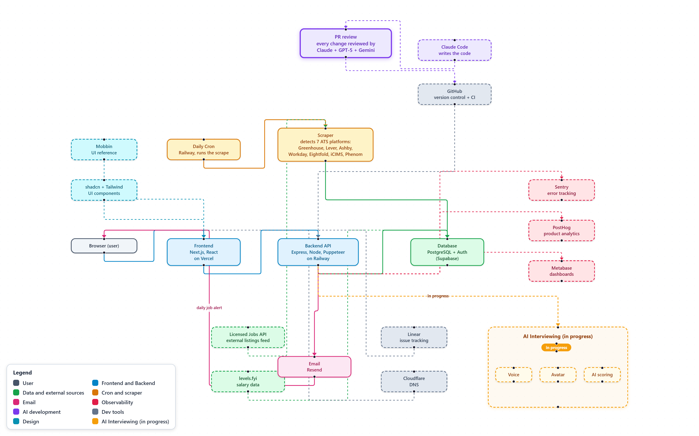

LayerTools
FrontendNext.js, React, TypeScript, Tailwind CSS, hosted on Vercel
BackendNode.js, Express, hosted on Railway
Database and authPostgreSQL and magic-link sign-in on Supabase, LinkedIn OAuth
ScrapingCustom scrapers for 7 job platforms, Puppeteer for the stubborn ones
AI developmentClaude Code writes the code; the AI Tribunal reviews it: ChatGPT, Gemini, Claude Fable, with Claude Opus as judge
Interview coachElevenLabs voice, Anam video avatar, custom scoring
Payments and emailStripe checkout, Resend for every email
MonitoringSentry error tracking, PostHog product analytics, Metabase dashboards
AI evaluationLangfuse for prompt versioning and scored test sets
Workflow and DNSGitHub with CI gates, Linear for tickets, Cloudflare DNS

The system map: scrape, store, deliver, monitor (click to enlarge)